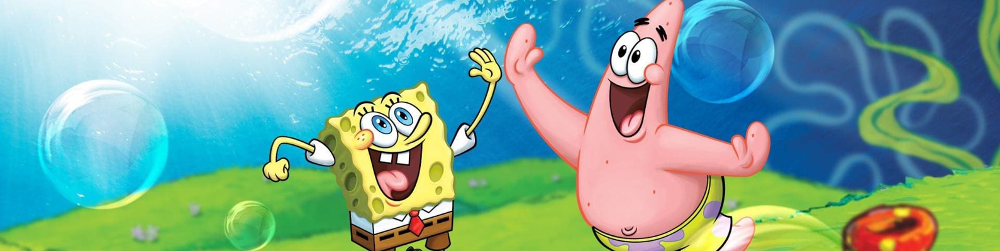
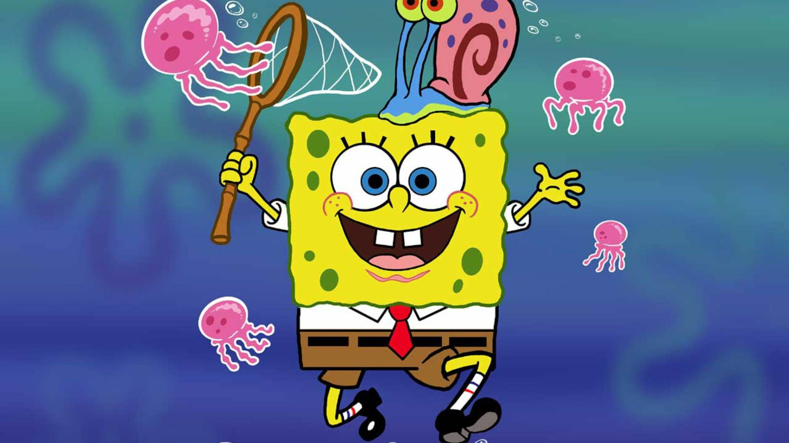
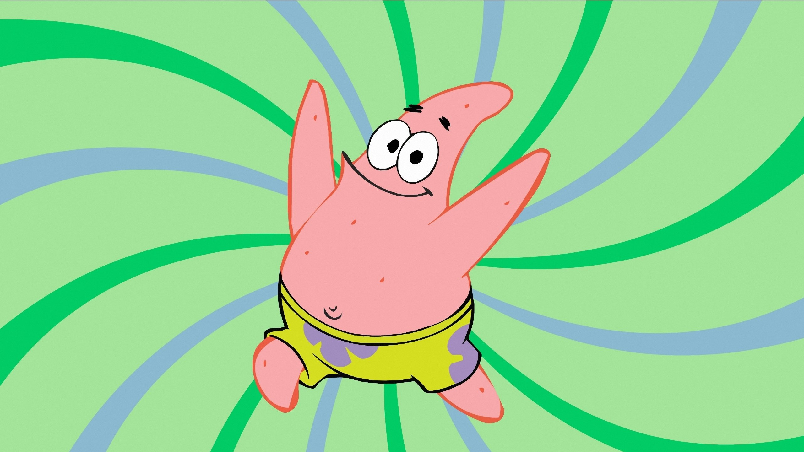
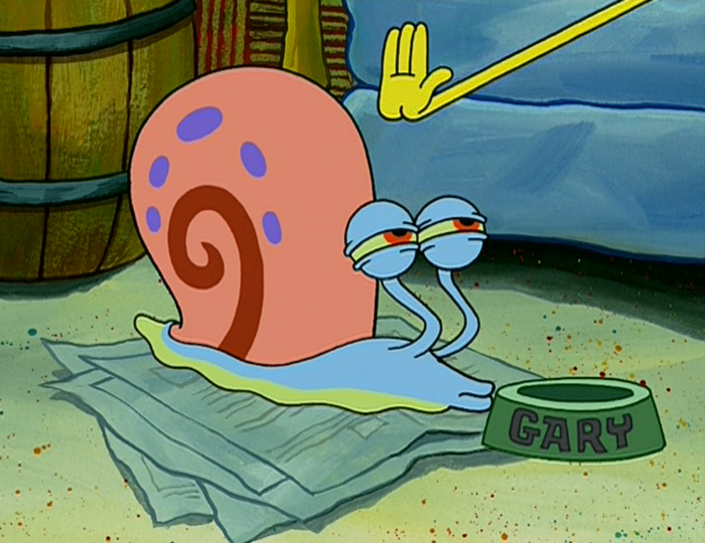
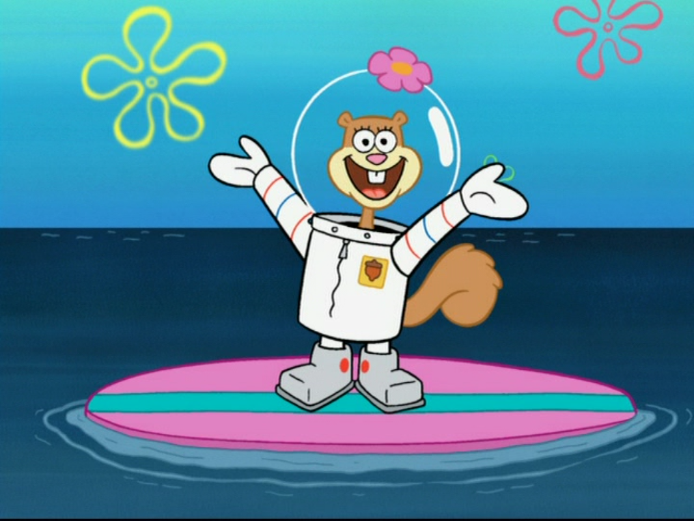
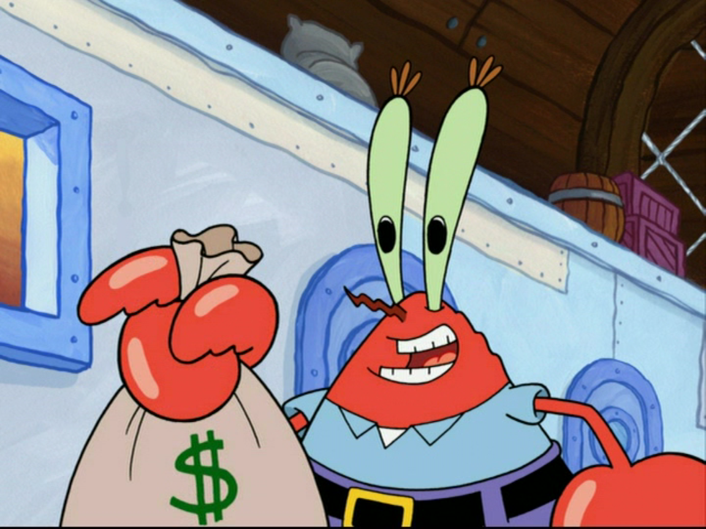
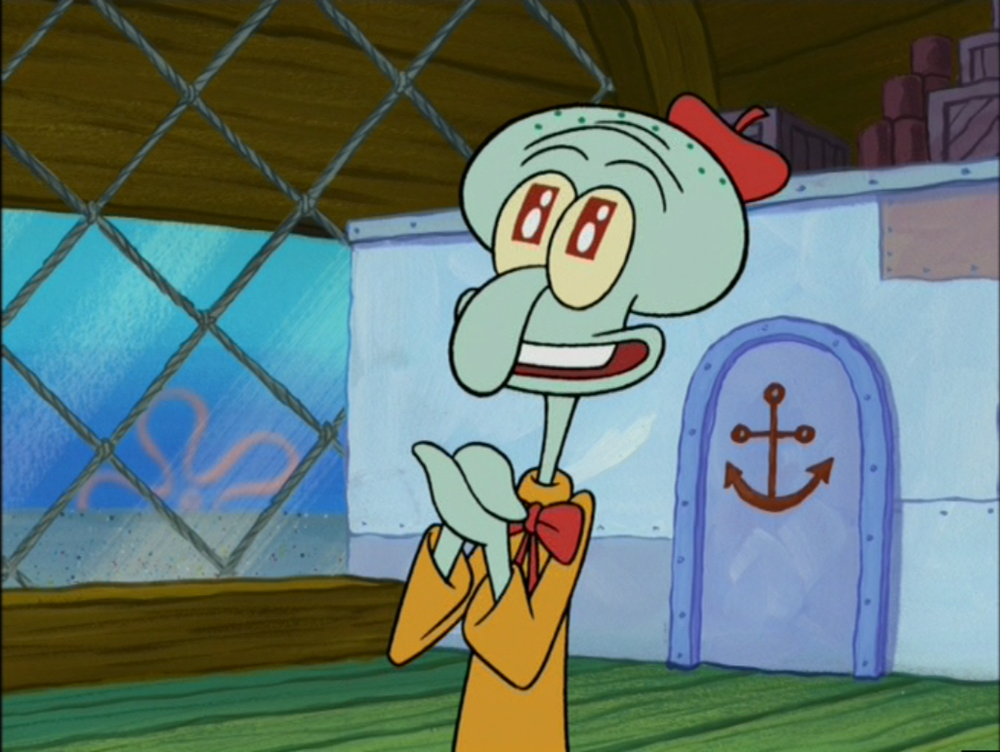

Губка Боб квадратные штаны
Губка Боб очень добросердечен и невинен, и очень редко ведет себя открыто жестоко по отношению к кому-либо, даже к тем, кто находит его раздражающим и жестоко поступает с ним. Он очень бескорыстный и преданный человек, особенно по отношению к своим близким.Губка Боб может легко испугаться и обычно паникует, когда напуган. Он боится темноты и клоунов, а еще ненавидит острый соус, также иногда слишком невежествен, чтобы заметить надвигающуюся опасность, и его не от мира сего мышление может подвергнуть опасности себя или других.
⁂⁂⁂
Патрик изображен приятным, полным, ленивым, туповатым, невоспитанным, наивным и вообще невежественным человеком. Несмотря на то, что он уже взрослый человек, Патрик ведет себя незрелым для своего возраста и участвует во многих детских мероприятиях с Губкой Бобом. Личность Патрика похожа на личность Губки Боба, но они не взаимозаменяемы, так как Губка Боб гораздо более умен, ответственен, оптимистичен, манерен и приземлен, чем Патрик. Его тупость часто раздражает Губку Боба и причиняет ему массу неудобств
⁂⁂⁂
Гэри -это морская улитка, которая является домашним животным Губки Боба Квадратные Штаны. Несмотря на то, что его обычно видят без ног, но в нескольких сериях мультфильма они у него есть и он носит обувь. Как и настоящие кошки, Гэри ненавидит принимать ванну, проявляет приступы гнева, а также у него есть страсть к правам животных и не подчиняться вещам, которые он не хочет делать.
⁂⁂⁂
Сандра Дженнифер "Сэнди" Чикс - это белка с поверхности, которая носит водолазный костюм и живет в наполненной воздухом стеклянном куполе. искатель острых ощущений, который любит экстремальные виды спорта и карате. Приехав из штата Техас, она имеет южную тягу и любовь к родео. Она работает как учёный и сама построила свой древесный дом и воздушный костюм. Помимо этого является одним из лучших друзей Губки Боба и хорошо ладит с Патриком.
⁂⁂⁂
Юджин Гарольд Крабс(чаще его называют Мистером Крабсом) чрезвычайно жаден и скуп, его изображают таким же плохим, как Планктона. Единственное, что его интересует - это деньги, и он не может больше заботиться ни о ком, включая своих клиентов, сотрудников, семью или даже самого себя. Он относится к деньгам так, как будто они в каком-то смысле королевские. Он часто ассоциирует своих клиентов и продукты с деньгами. Кроме того, когда Губка Боб или кто-то другой делает что-то, что ему не нравится, он часто говорит: "Это выйдет из твоей зарплаты".
⁂⁂⁂
Cквидвард Джей Куинси Щупальца груб, чванлив, сварлив, самовлюблен, а иногда и садист. Он смотрит на мир в таком негативном свете, что его редко можно увидеть
приветствующим кого-либо с улыбкой. Он ненавидит свою работу в «Красти Краб» и не является хорошим сотрудником, часто можно увидеть, как он спит или читает на работе. Он является соседом между Губкой Бобом Квадратные Штаны и Патриком Старом и именно из-за этого обстоятельства часто строится сюжет в мультфильме.
Несмотря на свой характер, он по-прежнему остается одним из самых умных и образованных персонажей. Он имеет саркастическое отношение и видит других как нецивилизованных дебилов, в то же время не в состоянии принять свои собственные личные недостатки.
Сквидвард считает себя непонятым и недооцененным, обвиняя общество в своих неудачах.